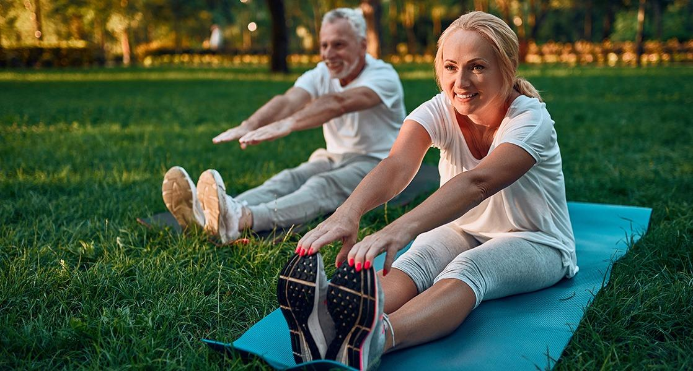
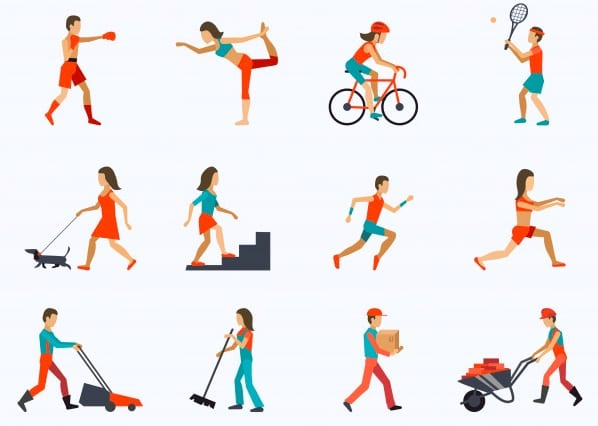
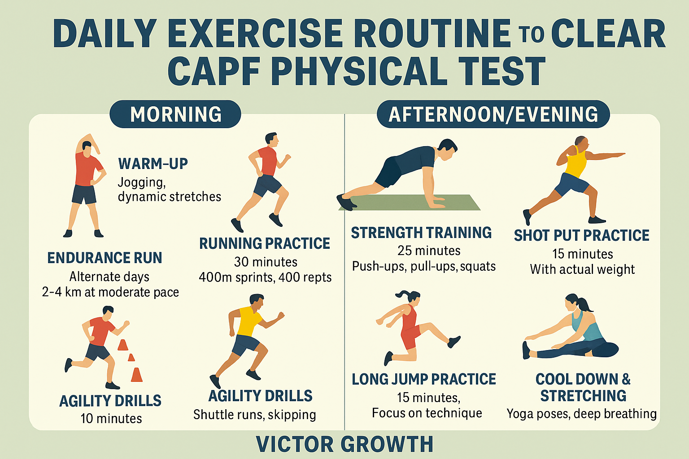
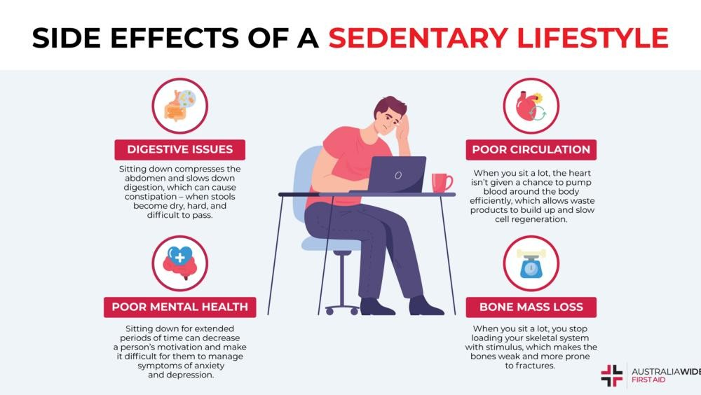

Staying Active for Better Health
Sections
Benefits Activities Routine Risks ReferencesBenefits of Exercise

Regular physical activity is essential for maintaining good health. It strengthens the heart, improves blood circulation, and increases energy levels. Exercise also helps people stay active and productive throughout the day.
Exercise also improves mental well-being by reducing stress, improving mood, and helping with better sleep and concentration.
- Improves cardiovascular health
- Builds strength and stamina
- Helps maintain a healthy weight
- Reduces stress and anxiety
- Improves sleep quality
Overall, regular exercise leads to a healthier lifestyle.
Types of Physical Activities

There are different types of physical activities that improve different areas of fitness. A balanced routine includes a mix of activities.
- Aerobic: running, cycling, swimming
- Strength: weight training
- Flexibility: yoga and stretching
- Recreational: football and badminton
Choosing enjoyable activities helps maintain consistency.
Daily Fitness Routine

A simple daily routine can improve health over time. Regular exercise does not need to be intense.
- 5–10 minutes warm-up
- 20–30 minutes exercise
- Cool-down and stretching
- Stay hydrated
Small habits like walking more and using stairs help improve activity levels.
Sedentary Lifestyle Risks

A sedentary lifestyle involves long periods of inactivity due to screen time or desk work.
- Increased risk of obesity
- Heart diseases
- Back pain and poor posture
- Low energy levels
Staying active and taking regular breaks helps reduce these risks.
References
World Health Organization.
https://www.who.int/news-room/fact-sheets/detail/physical-activity
NHS.
https://www.nhs.uk/live-well/exercise/exercise-health-benefits/
MedlinePlus.
https://medlineplus.gov/exerciseandphysicalfitness.html
Firstbeat (2026) Benefits of increasing physical activity. Available at: https://www.firstbeat.com/en/blog/5-significant-benefits-of-increasing-physical-activity/ (Accessed: 28 March 2026)
Charm Austin (2026) Fitness tips and commitment strategies. Available at: https://charmaustin.com/blog/fitness-resolutions-3-easy-tips-to-help-you-commit/ (Accessed: 28 March 2026)
Victor Growth (2026) Daily exercise routine. Available at: https://victorgrowth.com/daily-exercise-routine-to-clear-capf-physical-test/ (Accessed: 28 March 2026)
LinkedIn (2026) Sedentary lifestyle risks. Available at: https://www.linkedin.com/pulse/how-beat-hidden-dangers-sedentary-lifestyle (Accessed: 28 March 2026)